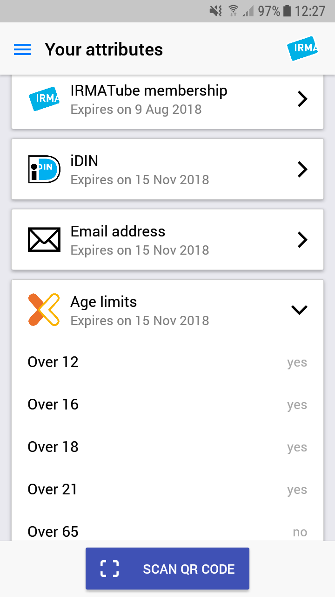
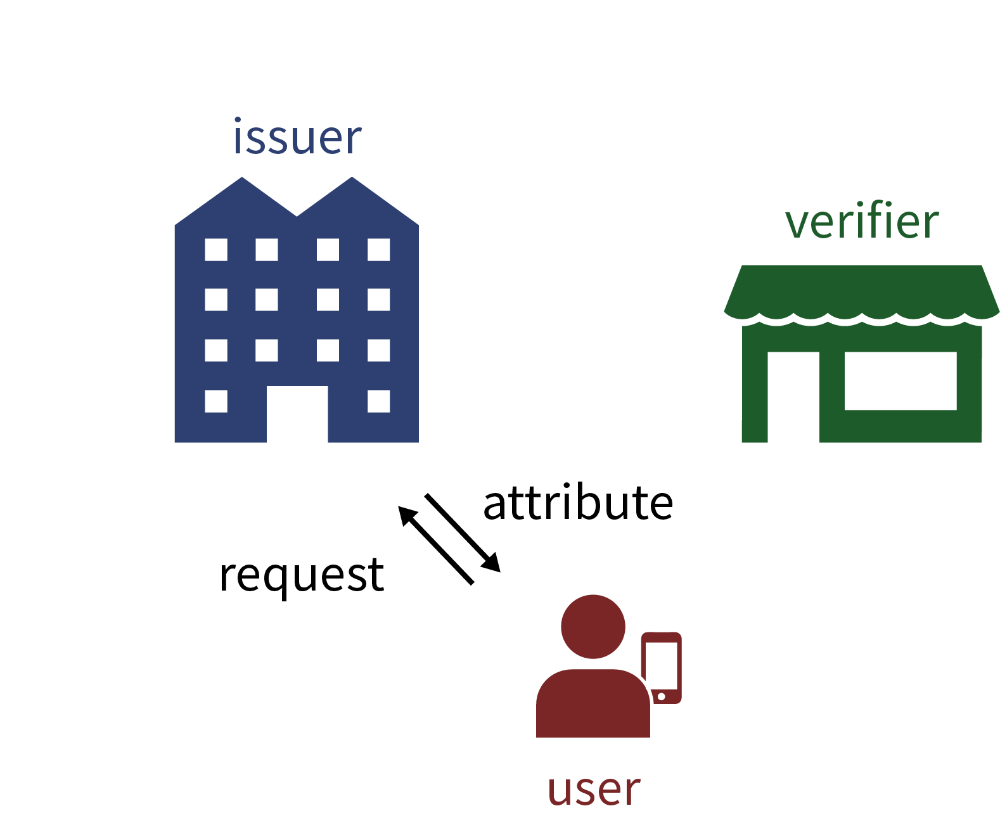
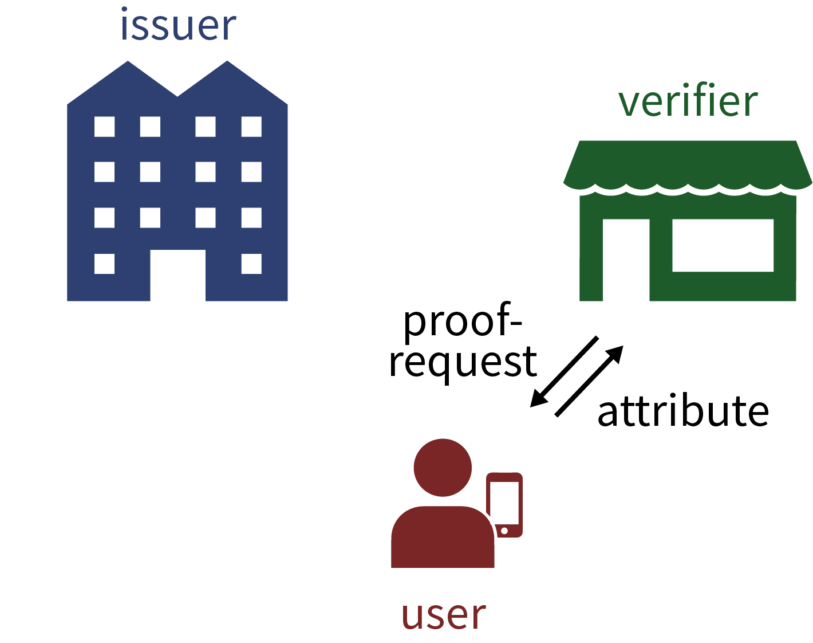
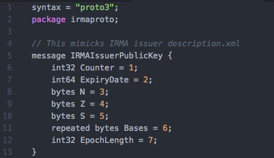

IRMA and Blockchains
Architecting decentralized IRMA schemes

Timen Olthof
R&D lead / architect decentalized networks and identities @ Alliander
IRMA background

IRMA Attributes
IRMA Credentials
IRMA Master Key
IRMA Proofs (naive)
IRMA Proofs (with selective disclosure)
Why are IRMA proofs valuable?
- Short answer: Because the relying party decides that the proofs are valid.
- The RP has to trust all algorithms, tools and inputs that he uses to do this validation.
- The core element of this validation is trusting the issuers of the attributes.
- Verify cryptographically that the issuer(s) signed the attributes/credentials.
- Of course the IRMA software implementation does this for you :)
IRMA protocol
Issuance

Disclosure
How to validate IRMA proofs?
- The RP has to know public keys of the issuers.
- The RP has to know that these keys do indeed belong to the parties that are trusted.
- For EVERY issuer that is relevant in the transaction/proof!
IRMA Issuer Data

IRMA Schemes
Schemes allow easier managing of IRMA issuer data.
- Instead of knowing about all issuers, we now just have to know about a few schemes.
- IRMA Schemes are open, anyone can start a scheme.
- Someone who starts a scheme, becomes the 'scheme manager' for that scheme.
IRMA Scheme XML (metadata)
Scheme is context for all parties.
Managing a scheme is a serious task!
- Current implementation as a signed file structure (on Github).
- Scheme manager manages all parts of the scheme.
- Good for standardization.
- Relatively inflexible.
- Are improvements possible?
What is Blockchain?
- For the purpose of this talk:
- Smart Contracts
- Distributed Ledger Technology
- No single system administrator.
Smart Contracts
Distributed Ledger Technology
How do other Identity Management systems use Blockchain?
- They started out really naive.
- Storing wallet (= personal data / attributes) on Blockchain?
- Store private (non-public) data on Blockchain?
- Gravest mistake: storing re-usable identifiers such as (a public version of) the master key on blockchain!
Issues with Identity Management on Blockchain
- Linkability in case of repeated use of identifiers (which is generally the case).
- No dataminimalization (GDPR)
- No right to be forgotten (GDPR)
- Complexity / Rookie mistakes
- Developments are going fast.
- Soverin is implementing a kind of Attribute Based Credentials (AnonCreds)
(Provisional) golden rule for Blockchain development
- Only store public data on (public) blockchains.
- Luckily the IRMA scheme IS public data!
- Not trying to do 'IRMA on Blockchain'.
- Better question: are these technologies useful to improve IRMA?
IRMA Scheme implementation on Ethereum
- Experimental implementation on Ethereum.
- As close to original implementation as possible.
- IRMA Scheme represented as a smart contract.
- It works!
- Available on Github - https://github.com/timenolthof/irmaethereumscheme
IRMA Scheme Smart Contract - Data Types
IRMA Schemes
Serialization using Protocol Buffers

IRMA Scheme Smart Contract - Functions
Advantages of Ethereum implementation
- Issuers can manage their own metadata.
- Issuers can manage their own credential specifications.
- Issuers can manage their own keys (and key rotation).
- A lot less work for the scheme manager.
- Scheme data structure can become more dynamic when using multiple smart contracts.
- Schemes can support possible new features like
- Users becoming issuers themselves 'on the fly'
- 'web of trust'
Problems with Ethereum implementation
- Ethereum VM and Solidity are slow, incomplete, and expensive.
- Transaction costs, although they are ok at about €5-10.
- There are tight limits on data size (gas limit).
- Adds a lot of complexity and dependencies to the codebase.
- Doesn't remove the need for a single 'root of trust'.
Next Steps / Future Work
- Ethereum is too limited, look for other suitable technologies
- IPFS (or variants) might be a candidate.
- Research other ways to decentralize schemes as well.
- Would love to hear your input!
Take Home
- Never store non-public data on a blockchain.
- Particularly not personal data.
- Using Blockchain for IRMA schemes can have some practical benefits.
- Better DLT needed to make IRMA scheme feasible in production.
Thank you!
Image/video sources / references
- https://privacybydesign.foundation
- https://news.bitcoin.com/wp-content/uploads/2016/02/BCinfo.jpg
- https://www.intheblack.com/articles/2018/03/22/blockchain-future-record-keeping
- https://www.youtube.com/watch?v=98eAygGLoWI
- https://www.intheblack.com/articles/2018/03/22/blockchain-future-record-keeping
- https://giphy.com/gifs/news-QZPhk0XqBpdbq
- https://thenextweb.com/contributors/2017/11/09/how-blockchain-will-change-major-industries/
- https://www.draglet.com/blockchain-services/smart-contracts/use-cases/
- https://wwwmatthes.in.tum.de/pages/djh1ws6a8dwz/Smart-Contracts-and-Blockchain-Technology